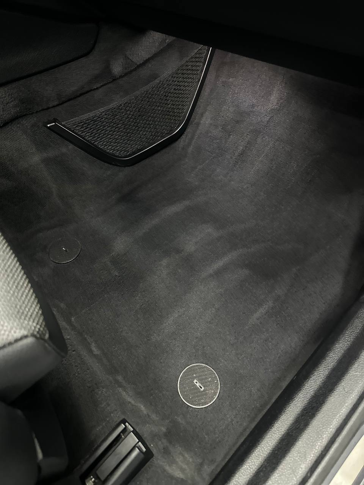
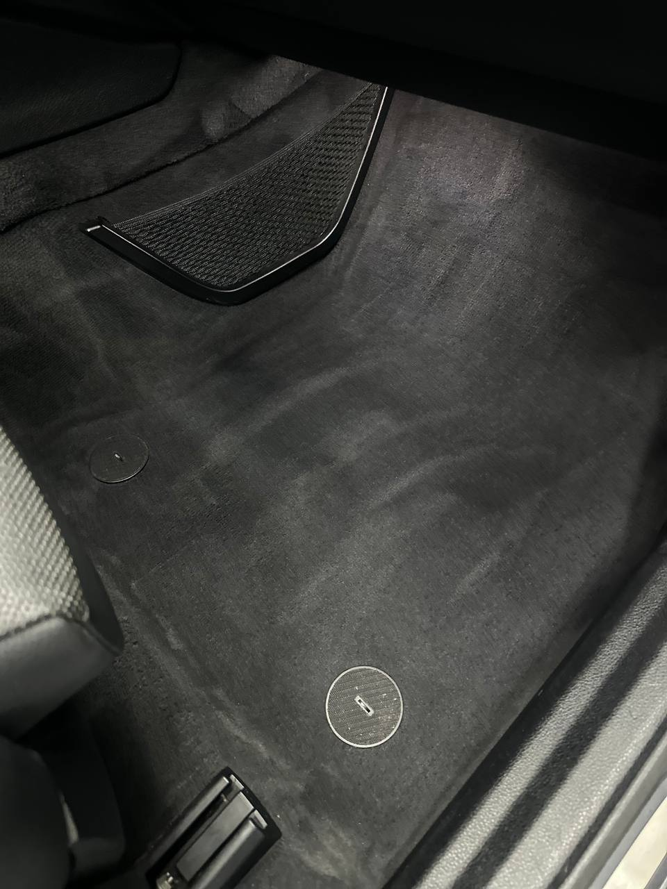

Комплексная мойка, чистка и освежение салона и кузова для презентабельного внешнего вида перед продажей.
Чистая и ухоженная машина выглядит лучше и может быть продана дороже. Мы приводим авто в товарный вид.
За 1–3 дня до выставления машины на продажу. Это повышает шансы на быструю и выгодную сделку.
 
